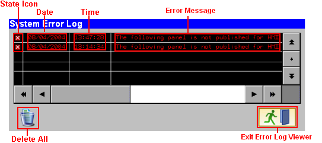
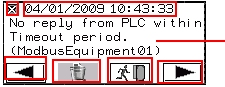
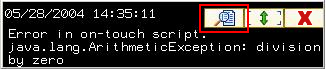

|
|
|
|
|
|
|
|
An error message is recorded in the System Error Log Viewer when a run-time event occurs and when a run-time event returns to normal. The System Error Log Viewer uses colors and icons to identify the run-time events that are active and returned to normal. The Error Log can record up to 100 run-time events, which are listed in chronological order, with the newest event at the top and the oldest event at the bottom.
The Error Log is stored in SRAM, so if your application causes the Vijeo-Designer Runtime to fail, after you restart Vijeo-Designer Runtime you can check the Error Log Viewer and identify the problem.
The System Error Log Viewer is part of every user application and does not require any setup. You can display the System Error Log Viewer using a switch, an action or panel action, or the System Error Log Viewer icon in the Active Error Viewer. See the Section below, How to Display the System Error Log Viewer.
You can create your own user-defined System Error Log Viewer from the parts available in the Toolchest. For instructions, see Section 28.1.3, Creating a System Error Log Viewer.
When you display or close the System Error Log Viewer, you are changing panels. Be aware of the actions in your project that are triggered by the On Close and On Open panel operations. See Section 9.4.2, Actions Wizard.
Periodic and Conditional panel actions assigned to a panel will stop running when you change the panel to display the System Error Log Viewer.
On Close panel scripts assigned to a panel will run when you change the panel to display the System Error Log Viewer.
On Open panel scripts assigned to a panel will run when you exit the System Error Log Viewer and return to the panel.
When a popup window's Lock Out Base Panel property is set to Enabled and a popup window displays in Runtime, the Active Error Viewer will still open. However, the Go to Error Log button on the system window is disabled, and you will not be able to display the Error Log. The button is available when you close the popup window.
The System Error Log (Large, Medium, and Small) Toolchest parts are available for all targets except for targets with a 200x80 panel size.

Date, Time: The date and time the system error occurred. The time displayed is based on Greenwich Mean Time (GMT) offset by the Time Zone and Time Adjustment (Daylight Saving Time) settings of the target machine. You must set the Time Zone and Time Adjustment properly to log events at the correct time. For more information, see Section 4.5.3, Displaying Data Using Time Zone and Configuring Daylight Saving Time.
State: Icons and colors identify the system error's state.
Active. Active events are red.
Returned to Normal. Returned to normal events are green.
Error Message: The run-time event's error message. See Section 28.2.4, Run-time Messages, for a list of system error messages, descriptions on each message, and information on how to resolve the error.
Delete All: Removes all run-time errors from the log.
Exit Error Log Viewer: Returns the user to the previously displayed panel.
The Error Log-One Event Toolchest part is available for all targets. For targets with a 200x80 panel size, this is the only Error Log Viewer you can use.
|
Error |
Date and time of the error message |
|
||
|
 |
Error message |
|||
|
Go to previous error |
Delete all errors |
Exit |
Go to next error |
|
Error State: The following icons identify the system error's state.
Active.
Returned to Normal.
Date, Time: The date and time the system error occurred.
Error Message: The run-time event's error message. See Section 28.2.4, Run-time Messages, for a list of system error messages, descriptions on each message, and information on how to resolve the error.
Go to Previous Error/Go to the Next Error: The Go to Previous Error button takes you to previous, earlier error; the Go to the Next Error takes you to the next, later error.
Delete All Errors: Removes all run-time errors from the log.
Exit: Exits you from the Error Log and returns you to the previously displayed panel.
Vijeo-Designer has three methods for displaying the System Error Log Viewer: a switch, a script, or the System Event Log Viewer icon in the Active Error Viewer. The user-defined System Error Log Viewer is displayed using a method not described below. See Section 28.1.3, Creating Your Own System Error Log Viewer.
When the Active Error Viewer is open, touch the Show Error Log Viewer icon to display the System Error Log Viewer.

Use a switch to display the System Error Log Viewer. Create a switch, select System for the Operation, and select System Error Log.
Create an action or panel action, define the action settings, select System for the Operation and select System Error Log. See Section 9.4.2, Actions Wizard.
Create a script that writes the Error Log Viewer's panel ID (65500) to the _CurPanelID system variable. See Section 18.1, Programming with Scripts, for information on writing and running scripts.
_CurPanelID.write(65500);